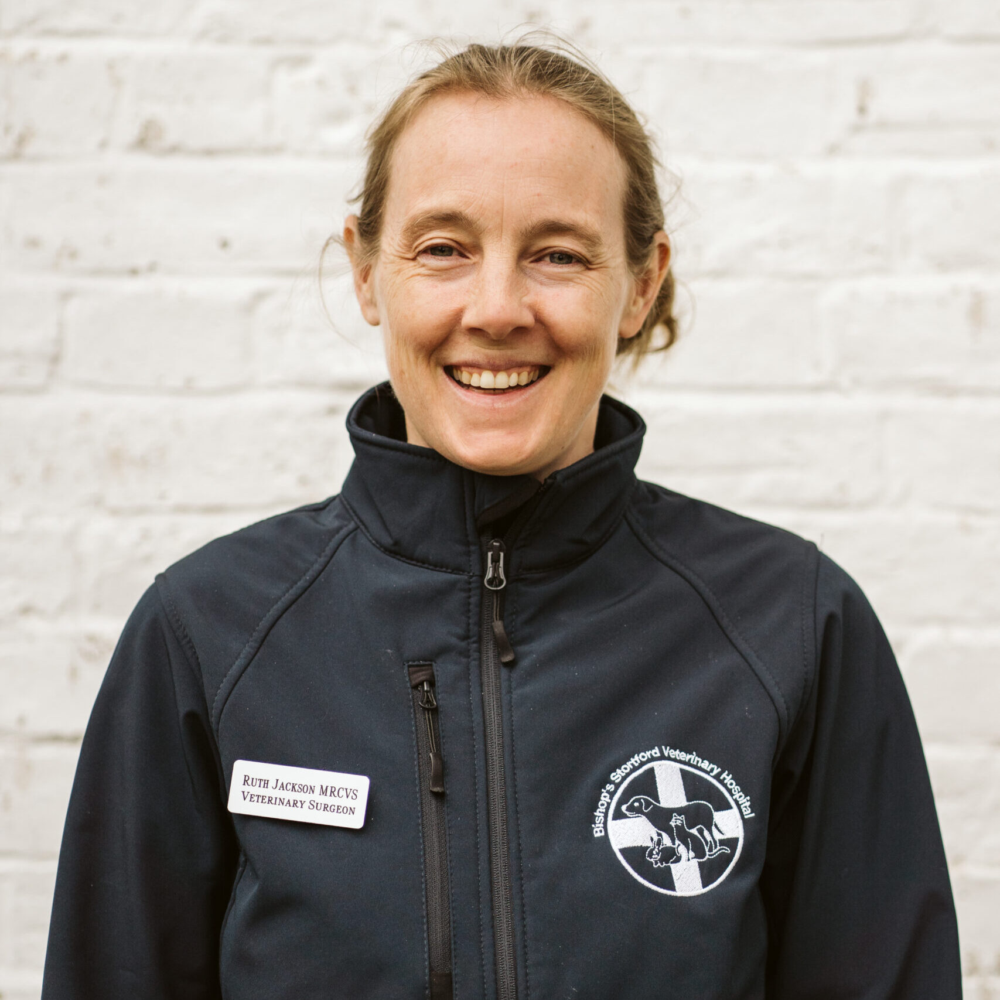
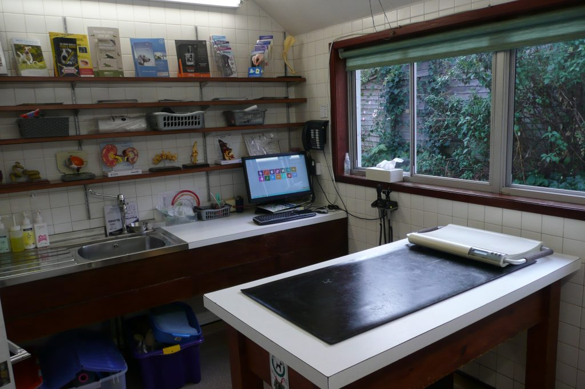
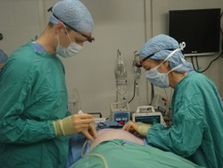
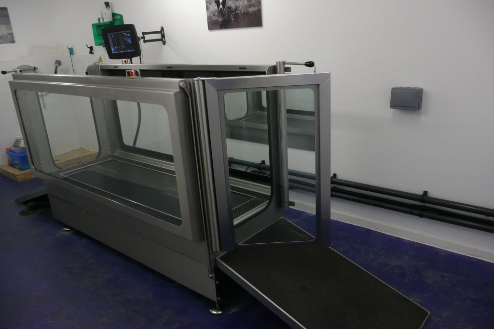
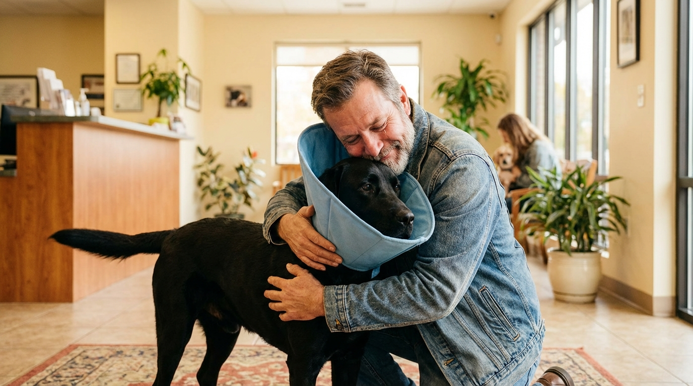
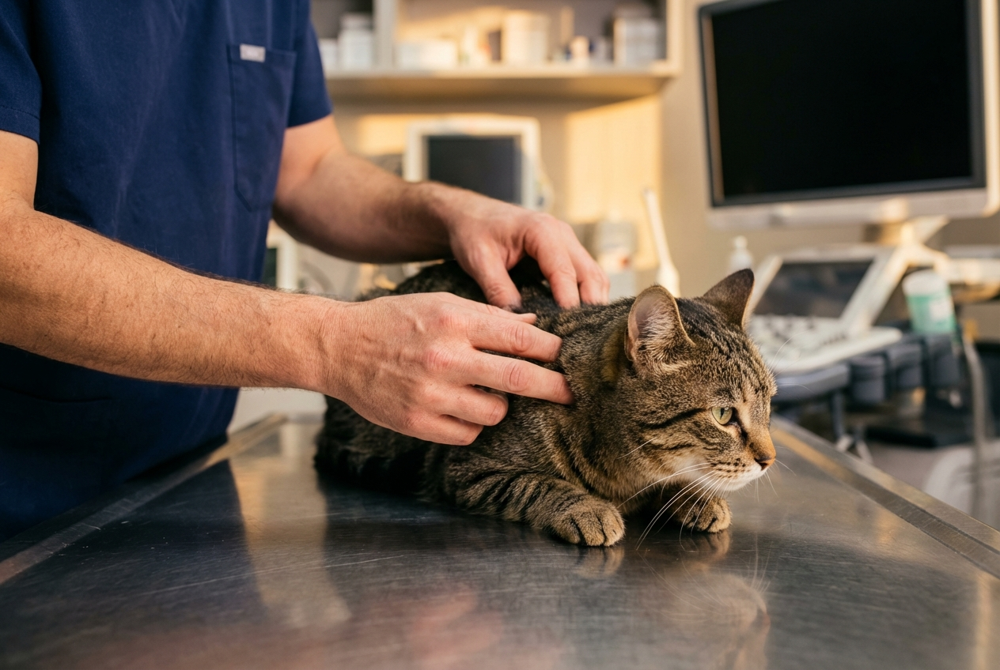

"At 11pm on a Sunday, Biscuit started limping badly. We called the emergency line, and within minutes they told us to bring him straight in. The vet diagnosed a cruciate ligament rupture and performed surgery that very night. Two months of hydrotherapy and Biscuit is running around like his old self."
Est. 1878 · Bishop's Stortford, Hertfordshire
Hospital-grade care for your pet.
The only veterinary hospital for 10 miles. 16 dedicated vets. 24/7 emergency support. Nearly 150 years of trusted expertise.
4.6 from 349+ Google reviews
Open 24/7 for emergencies
Hospital status — highest UK standard
16 vets · 18+ nurses
3 locations across East Hertfordshire
Founded 1878 · independently owned
The reality for most pet owners
Your pet deserves better than guesswork
Pet emergencies don't happen during office hours. And when something's wrong with your pet, you need to know they're in truly expert hands — not good enough hands, but expert hands.
Too many pet owners find themselves in a nightmare scenario: it's midnight, their pet is in crisis, and they discover their regular vet can't help.
"Is my vet experienced enough for a serious diagnosis?"
"What happens if there's an emergency after hours?"
"Will they have the right equipment and surgical capability?"
"Am I giving my pet the best possible care?"
These are real concerns. And they deserve real answers from a practice you can truly trust.
Empathy & expertise, since 1878
Meet your pet's
Meet your pet's
expert team
We understand what it's like to love a pet. They're not just animals — they're family. When something goes wrong, you need to know they're being cared for by people who understand that, and who have the expertise to back it up.
Lauren Romain
Partner · MRCVS
Neil Macleod
Partner · MRCVS
Poppy Ritchie
Partner · MRCVS

Ruth Jackson
Partner · MRCVS
Real stories from real families
Trusted by pet owners
Trusted by pet owners
across East Hertfordshire
"We've been taking Poppy for her checkups since she was a kitten. Ruth always takes time to explain what she's looking for, asks about Poppy's behaviour and diet, and genuinely cares about her long-term health. It's nice to feel like your pet isn't just another appointment."
"After Oscar had a stroke, our original vet said there wasn't much they could do. Bishop's Stortford offered hydrotherapy as part of his recovery. Watching him regain his strength was incredible. They didn't just treat the condition — they gave us hope."
"When Milo developed an ear infection while we were near Saffron Walden, we popped into their branch there. Same high standard, same lovely team. They pulled up his history instantly. Three locations mean there's always somewhere convenient."
A clear path forward
Your pet's care,
Your pet's care,
made simple
1
Get in touch
Call us anytime on 01279 654108, or book online for routine appointments. New clients welcome. We'll get you scheduled at whichever location works best for you.
2
Expert assessment
Your pet meets with one of our experienced vets for a thorough health evaluation. If needed, we have advanced diagnostics on-site. We explain everything clearly — no surprises, no hidden costs.
3
Ongoing care & peace of mind
Whether it's routine wellness, specialist treatment, or an emergency at midnight, we're with you every step. Your pet builds a long-term relationship with our team.
Comprehensive veterinary services
Everything your pet needs,
Everything your pet needs,
under one roof

24-hour emergency care
Full emergency surgical and medical care — nights, weekends, bank holidays. Hospital-grade facilities and on-call vets ready to help.

Hospital-grade diagnostics
Advanced imaging, lab testing, and specialist diagnostics that catch problems early.

Hydrotherapy & rehabilitation
Specialist hydrotherapy pool for post-operative recovery, arthritis management, and mobility improvement.
Wellness & preventative plans
Tailored health packages — vaccinations, flea/worm treatment, health checks, dental care.
Multi-branch convenience
Three locations (Bishop's Stortford, Saffron Walden, Stanstead Abbotts) all operating to the same hospital standard.
Specialist surgery
From routine procedures to complex orthopaedic and soft tissue surgery.
What's at stake
What you risk without
What you risk without
the right vet
Late-night emergency? You're scrambling. Your regular vet is closed. You're driving across the county to an unfamiliar clinic.
Complex diagnosis? Without advanced imaging, simple problems become complicated. Conditions go misdiagnosed.
Surgery needed? They refer you out. More stress, more cost, more travel.
No 24/7 safety net? You're always one crisis away from panic.
Don't let this be your story.
The transformation
Peace of mind.
Peace of mind.
Expert care. 24/7.
When you choose Bishop's Stortford Veterinary Hospital, you're not just getting a vet. You're getting a partner in your pet's lifelong health.

No more worry
Nearly 150 years in this community. Hospital-grade facilities. 16 dedicated vets. When a health question comes up, you book with us with absolute confidence.
24/7 emergency support
Midnight crisis? Bank holiday emergency? You have a number. You have a team. You have a hospital ready to help.
Continuity of care
Your pet sees familiar faces. The vets know their history, personality, unique needs. They're not just another patient.
Better health outcomes
Hospital-grade diagnostics catch what regular practices miss. Specialist services mean real recovery and quality of life.

Ready to give your pet the best?
Your pet deserves hospital-grade care from a team with nearly 150 years of experience.
Whether it's routine wellness, a specialist concern, or an emergency at midnight — we're here.
Three locations. 24-hour emergency care. 16 dedicated vets. One goal: your pet's health and happiness.